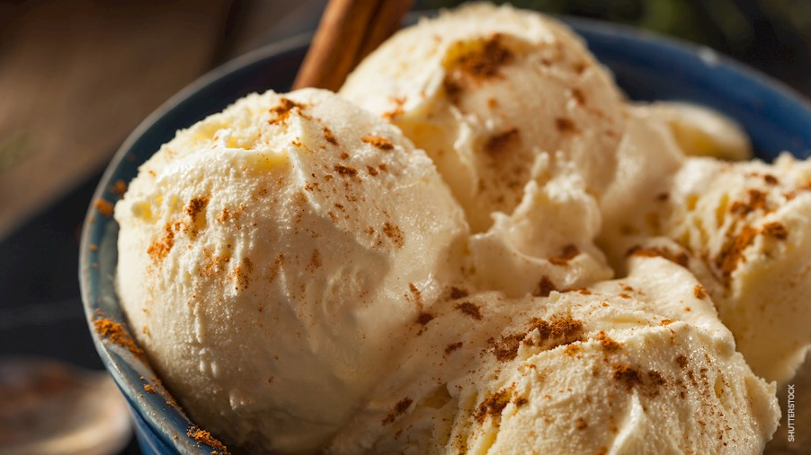

Recipe Catalog
Appetizers
Mains
Desserts

Queso helado
Queso helado is a Peruvian dessert that's very similar to ice cream, and it originates from Arequipa. It's usually made with a combination of whole milk, evaporated milk, cinnamon, cloves, desiccated coconut, sugar, and egg yolks. Both types of milk are simmered with cinnamon, cloves, coconut, and sugar.